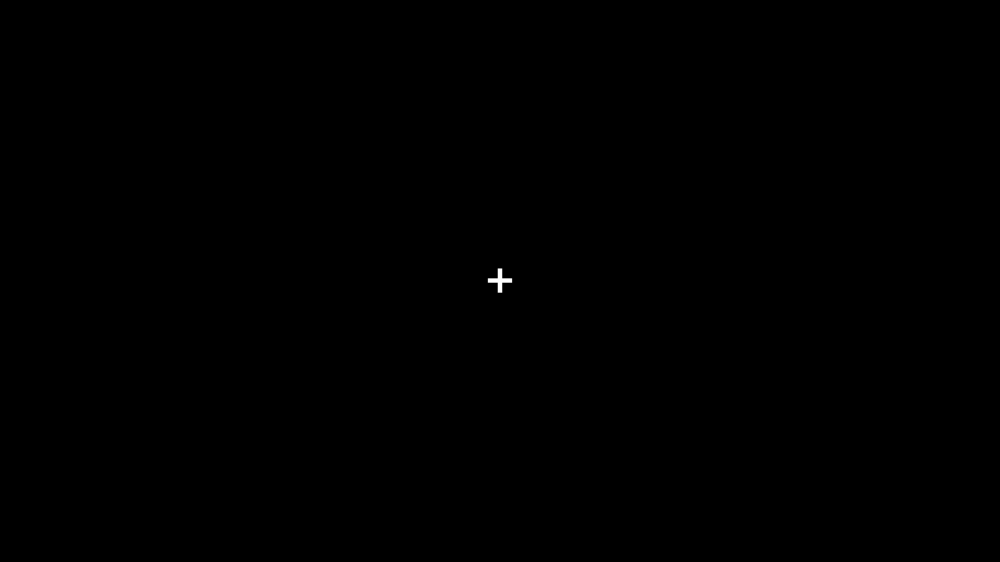
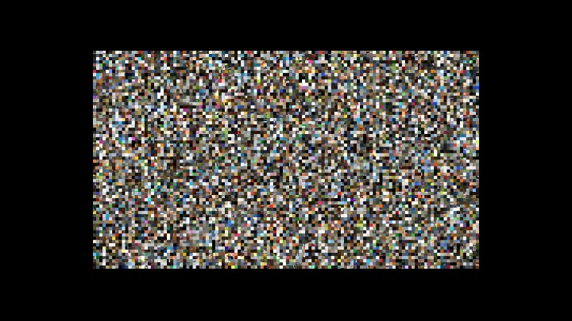
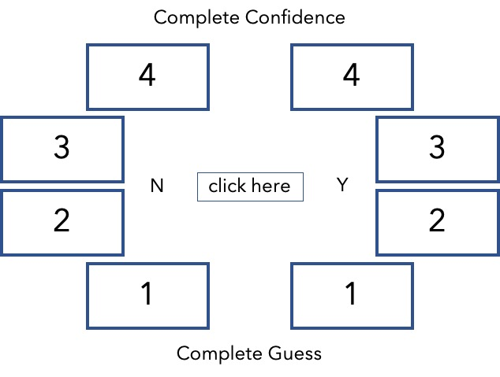
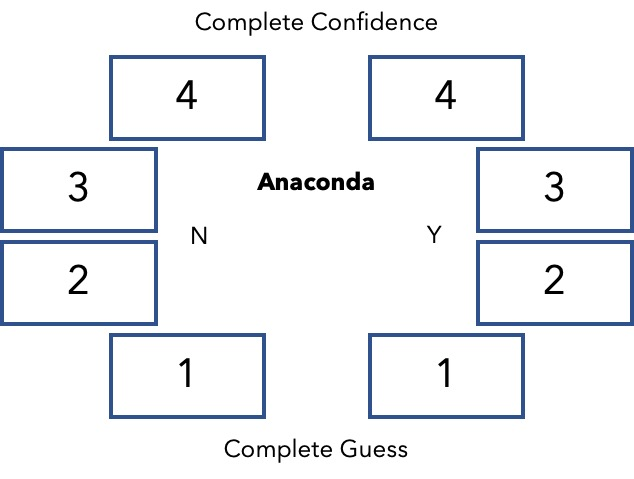

Instructions
Let's examine the experiment. Your task is to judge descriptors for 10 images.
For your reference, here are the steps. (Scroll down for more details)
-
First, you will see a cross-hair at the center of the screen. Please focus on the cross and do not move your eyes.

-
After a few moments, an image will flash on the screen, before it's covered by a mask.

-
When the mask disappears, a response screen will appear. The left half is for No [ N ] and the right half is for Yes [ Y ]. The stronger you feel about the word, the higher the number should be (Min = 1, Max = 4).To activate the task, you'll need to click the centre button.

-
Once you click the button, a word will appear that might, or might not, describe the image. Your task is to judge whether the word is related to the image or not and how confident you are.

- In the example above, the given word [ Anaconda ] is clearly NOT related to the image. You can choose the [ N4 ] option in this case.
When you press the [Space] bar, you will be given 3 practice trials.